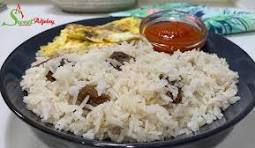

Braised Rice Recipe

Recipe Description
This is a very simple Ghanaian recipe on a different way to spice up cooking rice.
Yes, we are going to have pepper in it! What is Ghanaian food without our cherised spice (pepper). Let's dig
right in, starting with our ingredients.
Ingredients
- Rice
- Oil
- onion
- salt
- pepper
- tomato
- sardine
- egg
- water
- pear (optional)
- sausage (optional)
- ripe plantain (optional)
Instructions on preparation
- Put pot on fire
- Add oil and heat to a suitable temperature.
- Add chopped onions. Fry till it is golden brown.
- Add rice (preferrably two cups).
- Stir till it is evenly mixed with the oil and chopped onions.
- Add water to a reasonable level. Add salt to taste and cover saucepan to allow and allow to boil.
- Wash pepper, tomato and onion and grind. Add salt to taste.
- Cut ripe plantain into desired sizes and fry. Also fry eggs and sausages.
- Cut pear into desired sizes.
- When rice is properly cooked, serve and add pepper. Add eggs, sausages, sardine and sliced pear to garnish.
Home page
Jollof Rice Recipe
Ampesi Recipe